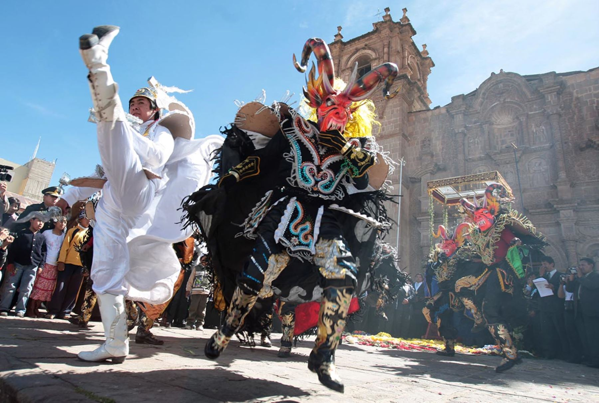

Aniversario de Puno: Celebración de la tierra del folklore
Cada 4 de noviembre, Puno celebra su aniversario con un despliegue de cultura, tradición y festividad. Conocida como la "Capital del Folklore Peruano", la ciudad se llena de danzas típicas, desfiles y actividades que rinden homenaje a su rica historia y a la influencia de la cultura aymara y quechua.
Historia
La ciudad de Puno fue fundada el 4 de noviembre de 1668 por el virrey Pedro Antonio Fernández de Castro, conde de Lemos. Desde entonces, la ciudad ha sido un centro de intercambio cultural y económico, desempeñando un papel crucial en la historia del altiplano peruano. Su aniversario es una ocasión para celebrar su identidad y tradiciones ancestrales.

Horarios y Ubicación
- Ubicación: Ciudad de Puno, región de Puno, Perú.
- Horarios de celebración: Durante todo el día, con eventos especiales desde la mañana hasta la noche.
- Costo de entrada: La mayoría de los eventos son gratuitos, aunque algunos espectáculos pueden requerir entrada.
Consejos para Visitantes
- Llega temprano a los eventos: Las calles se llenan rápidamente, especialmente en el desfile principal.
- Vístete acorde al clima: Puno puede ser frío en la noche, lleva ropa abrigadora.
- Disfruta la gastronomía local: Prueba platos típicos como el chairo y la trucha frita.
- Participa en las festividades: Únete a las danzas y celebraciones para vivir la experiencia completa.
- Respeta las costumbres locales: Puno tiene una fuerte identidad cultural, es importante mostrar respeto por sus tradiciones.